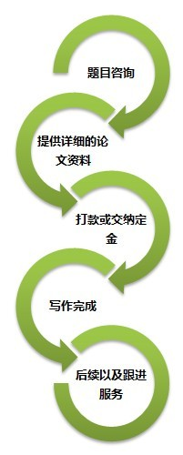

- >> 经济论文（Economic Papers）
- >> 管理论文（Management Paper）
- >> 法律论文（Legal papers）
- >> 文学论文（Literary papers）
- >> 计算机论文（Computer paper）
公司简介
123代写网，是专业代写留学生论文网，代写essay、代写assi gnment、英语论文代写，代写英国、澳洲留学生作业论文，代写本科、硕士毕业论文，代写国外MBA论文。
联系方式
服务热线： 15017520429
e-mail: 1234567@essay123.com
1.客户给出要求，并填写写作要求表
2.包括专业及写作方向（含多少字数？论文用途？硕士论文？本科论文？职称论文？需要发表职称论文？工作报告？具体题目提纲？需要时间？）
3.按照标准和要求谈好价格
4.支付总价的50%作为定金
5.安排相关专业的写手写作
6.全文完成后给50%论文审核
7.审核没问题，支付完余下的50%款
8.交付全部论文
9.直至答辩结束，各阶段的互动修改，疑难解答，辅助答辩都是免费的。
留学生论文写作流程

第一步：题目咨询
客户通过QQ或电话与我们取得联系之后，先咨询作业的价格及可操作性，并为我们提供您的讲义，case，PPT等相关资料，也可以填写作业要求表，使我们初步了解作业的大概要求，交付日期等必要信息，在线客服会根据您的情况进行综合评价并给出合理价格。
第二步：提供详细的论文资料
双方谈定价格后，客户需要填写详细的表格，按要求填写完毕，连同case，讲义，PPT，老师随堂课件等资料发给我们客服，如果需要登录国外网站，请复制国外网址在申请表上，并且注明ID和密码。
第三步：打款或交纳定金
我们在收到你的作业全部资料之后，会选择最适合的写手为你的论文进行写作和指导，并在24小时候之内用邮件确认你的作业已经开始进行。收到确认邮件后，您将交纳50%的写作定金，并及时与在线客户确认，或者通过电话，QQ，MSN等确认是否到账。
第四步：写作完成
先摘抄该作业的部分先给客户审阅，确认无误后，客户将剩下的金额补齐，同一时间，我们将最终的全文发送给您。
第五步：后续以及跟进服务
及时为客户修改已完成的论文，直到满意为止。论文完成后，会通过反抄袭检测，从而绝对杜绝抄袭。